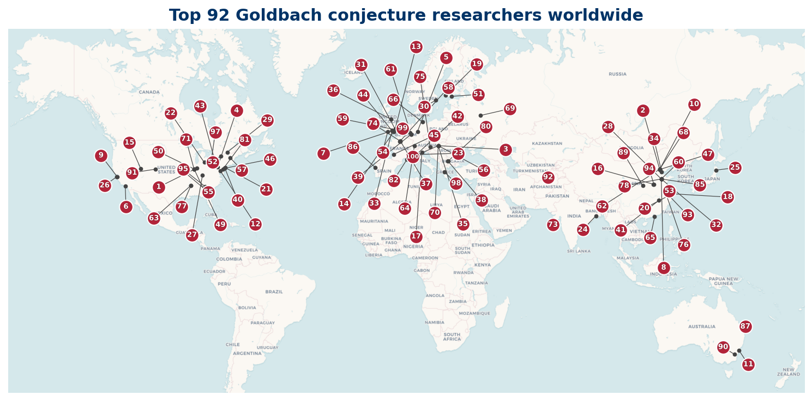

Who's Who in Goldbach Research
A directory of researchers working on the Goldbach conjecture
Christian Goldbach (1690-1764) wrote a letter to Leonhard Euler in 1742 conjecturing that every even integer greater than 2 is the sum of two primes. The conjecture is still open. Nearly three centuries later, mathematicians around the world continue to chip away at it.
This site is a reference directory of those people. It catalogs the Top 100 researchers most active on Goldbach and adjacent problems in additive prime number theory, gives their institutions, and provides a curated reading list of recent short papers for newcomers.
How the list is built
Three independent signals are combined:
- arXiv preprint output since 2003, filtered to math.NT and math.CO categories, matched against 17 Goldbach-relevant search terms.
- OpenAlex topical citations for the Goldbach phrases (
Goldbach conjecture,Goldbach problem,Goldbach's conjecture). - The Mathematics Genealogy Project, which provides advisor-student trees for the people identified in the first two steps.
The final ranking is a sum of arXiv-rank and OpenAlex-rank. People who score well in both pipelines rise. Two known false positives are explicitly excluded; full audit trail is in methodology.
Top 100 at a glance
100 researchers, drawn from 24 countries.
| Country | Top 100 researchers |
|---|---|
| US | 27 |
| GB | 12 |
| CN | 12 |
| FR | 7 |
| DE | 6 |
| CA | 5 |
| HU | 3 |
| AT | 3 |

Where to start
- The Top 100 is the canonical ranked list, sortable in your browser.
- Regional listings: North America, Europe, Asia.
- Reading list: 2,000+ short Goldbach papers from 2018 onward, with clickable links.
- Methodology: how the data is built, audit decisions, and limitations.
Citing this site
Hubbard, S. (2026). Who's Who in Goldbach Research. https://wwigr.org